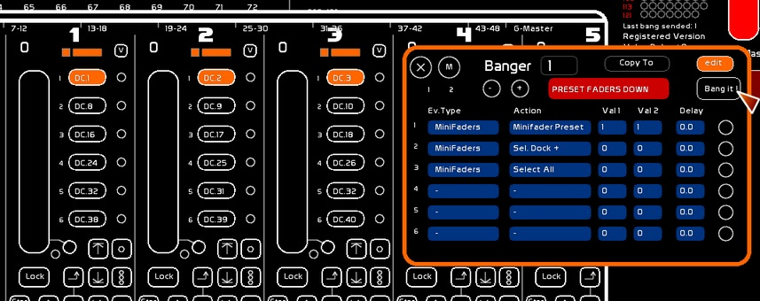
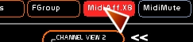

Table des matières
Comment travailler en manuel la création de ses mémoires
Il y a plusieurs réponses.
A vous de choisir l'approche qui vous intéresse le plus.
Approche Direct Channel
- Vous êtes l'heureux possesseur d'une surface de contrôle motorisée type BCF2000 ou iControl Pro.
- Vous créez vos états manuellement, au potard
- L'idée va être d'utiliser 8 faders pour travailler en mode direct channel.
- Et de créér deux bangers, qui vont vous permettre d'appeler les plages de manipulations de vos différents circuits.

Affectation Direct CH
- Appeler la fenêtre des Faders [F10]
- Se mettre en mode Direct CH*12
- Sélectionner le premier circuit de la série
- Clicker le dock à affecter
- faites cette opération le nombre de fois nécessaires
Voir: L'espace Faders
Création d'un groupe Minifaders


- Appeler la fenêtre des MiniFaders [Shift-F10]
- Sélectionner la pastille des 8 faders qui vous intéresse en Direct CH
- enclencher F1
- Clicker le Preset MiniFader ( le 1 )
- Enclenchez [Unsel] dans le panneau minifaders. La sélection est enlevée
- Vérifiez en clickant le Preset 1 que vous rappelez bien la sélection 1
Voir: La fenêtre des Minifaders
Création du Dock + Dock - dans Banger
- Ouvrez Banger [F11]
- Editez le premier banger:
- Premier évènement: Minifaders > MiniFader Preset > Val1 le num de Preset (1) > Val 2 si il est sélectionné ou déselectionné ( 1 ou 0 )
- Deuxième évènement: Minifaders > Sel Dock+
- Troisième évènement: Minifaders > Unselect All
- Enclenchez la fonction [COPY TO]
- Clickez le Banger sur le tableau récapitulatif des banger, vous copierez ainsicelui que vous venez d'éditer
- Naviguez dans la fenêtre Banger jusqu'au Banger recopié
- Editez le Deuxième évènement: Minifaders > Sel Dock-
En lancant manuellement les deux bangers vous allez donc faire varier la position du dock sélectionné sur vos 8 faders, changeant ainsi la valeur du fader et le pilotage des circuits, sans saute au plateau de niveau ( c'est tout l'intérêt du mode Direct CHAN ).

Voir: Banger, le gestionnaire d'évènements
Mise sur la boite à bouton

- Dans [MENU CFG] > MIDI > Midi Devices, branchez en IN et en OUT ( les deux colonnes) votre BCF
- Affectez en midi via MIDI AFFECT les 8 faders
- Affectez en midi les deux bangers
Vous avez désormais un rafraichissement de vos potards fonction du circuit en Direct CH sélectionné.
Voir: Configuration Midi et Affectations Midi
Enregistrement, moodifications de mémoires
Les raccourcis SHIFT F1 et CTRL F1 vont vous permettre de créer des mémoires dans le séquenciel, et de les modifier. Le défilement du séquenciel recalle vos potards.
Voir: La fenêtre du Séquentiel (CueList)
Réutiliser ce set pour chaque spectacle
Utilisez la fenêtre [SAVE] en mode [CHOICE] pour rercharge la partie Faders, ou alors créez vous un gabarit de spectacle à votre main, que vous rechargerez pour tout nouveau spectacle.
Voir: La fenêtre Save
Approche Faders
Vous travaillez vos états lumineux par grands groupes de circuits ou par états lumineux pré enregistrés et non par circuits sol.
Vous n'avez pas de surface motorisée et vous n'avez pas besoin de reprendre la main physiquement au potard sur le controle d'un circuit.
- Vous passez donc par la structure des Faders
- par rapport au séquenciel vous êtes en HTP
Dans les faders vous chargerez:
- des états lumineux via [F1]
- des liens vers des mémoires
- des contenus dynamiques
Vous allez utiliser la fonction SHIFT F3 ou CTRL F3 pour la création et la modification de mémoires en prenant en compte le séquenciel ET les états issus des faders.
- Voir: Présentation des faders et L'espace Faders